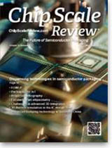

Current Issue
May • June 2015; Volume 19, Number 3
Cover Photo
The DispenseJet 9500 jets underfill for flip-chips that are attached to an organic substrate strip in an array layout. Using non-contact jetting, the fluid is able to be dispensed close enough to the edge of the device to minimize keep-out zones. Capillary force causes the underfill to flow underneath the die, thereby filling the spaces between the bumps on the die and the substrate.
Photo courtesy of Nordson ASYMTEK
Read the issue Download PDF SubscribeTech Briefs
Submit Technology Newsby Debra Vogler, Senior Technical Editor
NANIUM S.A. introduces WLCSP+
Steffen Kroehnert, Director of Technology, NANIUM S.A.
NANIUM S.A. recently announced the successful qualification of another type of wafer-level package (WLP) – called WLCSP+ – that is based on the company’s wafer-level fan-out (WLFO) technology, or, as the company characterizes it, a fusion of WLFO, high-volume manufacturing (HVM) capabilities, and classical wafer-level chip-scale packaging (WLCSP) technology. ...>>
Evans Analytical Group makes millions in new tool investments
Aram Sarkissian, General Manager, Microelectronics Test and Engineering (MTE) for Evans Analytical Group
Evans Analytical Group (EAG) recently enhanced its capabilities with the acquisition of multiple advanced imaging and inspection tools for electronics failure analysis. In particular, the company acquired an OKOS VUE 400-P scanning acoustic microscopy (SAM) and ultrasonic non-destructive package testing tool that provides advanced imaging capabilities in conjunction with other visual examination methods ...>>
KLA-Tencor leverages front-end technologies for packaging inspection and metrology
Prashant Aji, Sr. Director, Head of Marketing SWIFT, KLA-Tencor
KLA-Tencor recently announced two new systems that support advanced semiconductor packaging technologies. One of them – the CIRCL-AP™ – enables all-surface wafer defect inspection, review and metrology at high throughput, which is achieved by the use of multiple modules that utilize parallel data collection for process control. ...>>
Cascade Microtech addresses need for constant voltage EM testing
Cascade Microtech, Inc. recently announced a new Multipurpose Electromigration (MPEM) module featuring an intuitive, full-featured test suite for predicting the lifetime and reliability of copper interconnects in modern integrated circuits. ...>>

ASE/TDK JV places embedded technology processes under one roof
William T. Chen, ASE Fellow and Senior Technical Advisor
Advanced Semiconductor Engineering, Inc. (ASE) recently announced that it will enter into a joint venture agreement with TDK Corporation to establish a joint venture company in Taiwan. ...>>
Industry Spotlight
Submit Industry SpotlightIEEE Components, Packaging and Manufacturing Technology Society Honors 2015 Award Winners
Piscataway, N.J. (May 28, 2015) – The IEEE Components, Packaging and Manufacturing Technology Society (CPMT) recognized its 2015 award winners at the 65th Electronic Components and Technology Conference (ECTC), 28 May 2015, San Diego, California, ...>>SMTA Announces Retirement of JoAnn Stromberg
Minneapolis, MN, May 12, 2015 - The SMTA announced today that JoAnn Stromberg, the association’s Executive Administrator for the past 29 years, has announced plans to retire at the end of December 2015. ...>>JSR and imec Partner to Enable Next Generation EUV Lithography Resist Solutions
TOKYO, Japan and Leuven, Belgium – May 12, 2015 - JSR Corporation, a leading materials company and imec, a world-leading nanoelectronics R&D center, today signed a Letter of Intent (LOI) to partner in enabling manufacturing and quality control of EUV lithography materials for the semiconductor industry. This partnership will be formalized by establishing a joint venture with imec as minority shareholder. The signing ceremony was held at the Embassy of the Kingdom of Belgium in Tokyo (Japan). ...>>CORWIL Technology Receives Quality Management System Certification to SAE AS9100 Rev C.
Milpitas, CA, May 6, 2015 - CORWIL Technology announced today their Certification to the Aerospace Quality Management System, AS9100C, after a comprehensive audit by the international certification body NSF-ISR (NSF International Strategic Registrations). This major milestone demonstrates CORWIL’s commitment to the highest standards for contract management of assembly, test and reliability services. ...>>Industry Events
Keynote Address - Day One: High Density Fan-Out: Evolution or Revolution, by Rama Alapati, Director, Package Architecture & Customer Technology (PACT) at GLOBALFOUNDRIES Keynote Address - Day Two: 2.5D/3D IC – Examining Low Cost Alternatives, by Sitaram Arkalgud, VP, 3D Porfolio & Technologies at Invensas ...>>
For more information visit www.iwlpc.comThe 65th annual Electronic, Components and Technology Conference (ECTC) sponsor by IEEE/CPMT convened at the Sheraton Hotel & Marina in San Diego, CA on May 26-29, 2015. By all measures, the event, considered by many to be the premier international conference on IC packaging, components, and microelectronic systems technology, was an outstanding success. This year, the ECTC General Chair was Beth Keser from Qualcomm; Henning Braunisch of Intel, was the Technical Chair. ...>>
Research Triangle Park, NC. May 13, 2015 – The International Microelectronics Assembly & Packaging Society (IMAPS) announces the release of its program for the 4th Advanced Technology Workshop and Tabletop Exhibition on Automotive Microelectronics and Packaging. The Automotive ATW will take place June 3-4, 2015 in Dearborn, MI. This ATW is focused on key developments in automotive electronic and sensor packaging. It features presentations on advanced technologies that are pushing the envelope of packaging: especially in the areas of systems & applications, design, and materials & processes. Dr. Steve Bezuk, Senior Director of IC Package Engineering at Qualcomm, and Bob Knoell, Quality Manager at NXP Semiconductors will keynote the event. The two-day Automotive ATW program is sponsored by Inventec and Fastech Synergy Phillippines, Inc. Please visit www.imaps.org/automotive for the complete program and registration information.